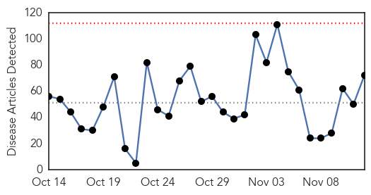

30 Day Trends
Web: 0 alerts, 0 warnings
Twitter: 1 alerts, 0 warnings
Top Articles:
- 0.999
- Saudi Arabia reports 25 new deadly MERS infections; First U.S. case discovered -
- 0.967
- SYPHILIS: Unprecedented increase in county cases
- 0.941
- What you need to know about E. coli
- 0.912
- Fifth Pa. patient dies after getting unusual infection
- 0.883
- Mysterious Pneumonia Attacks 31 Students At Konkuk University In Seoul; Korea Centers For Disease Control And Prevention Still Figuring Out The Cause
- 0.868
- Flu vaccine earlier in life may help stave off dementia decades later
- 0.866
- Lung Health – A Workers’ Issue
- 0.861
- The Berkshires online guide to events, news and Berkshire County community information.
- 0.854
- How we can use the Internet to track flu outbreaks
- 0.847
- Pa. health official expects open heart surgery-related infections will remain rare, but has no prediction on how many might arise
- 0.823
- Wayne County Journal-Banner Online: Senior Living
- 0.822
- The Post
- 0.820
- Syracuse hospital lifts water restrictions after Legionnaires' outbreak
- 0.803
- MEC voices concern about further water disruptions
- 0.791
- Youngstown News, Student with tuberculosis has recovered, says university
- 0.791
- WARNING GRAPHIC IMAGE: Jab shortage puts pet rabbits at risk from lethal disease
- 0.777
- WHO Syrian Arab Republic Donor Update 2015 (Q3) - Syrian Arab Republic
- 0.755
- C. difficile control: Handwashing practices lax at Quebec hospitals
- 0.754
- Furry flyers could make you real crook
- 0.749
- Penn State Hershey Medical Center: 185 call about bacteria
- 0.747
- Syphilis outbreak: 500 indigenous people in Queensland infected since 2014, Aboriginal and Islander Health Council says
- 0.739
- Schools and hospitals run out of water
- 0.727
- Venezuelan first lady's nephews charged with importing cocaine into US
- 0.725
- When the Evidence Gets Eaten, Thrown Away
- 0.724
- Air France fires four employees over violent attack on execs
- 0.722
- Chipotle locations start to reopen after Northwest outbreak
- 0.721
- Bucks parents encouraged to get young children vaccinated against flu this winter
- 0.707
- UN resolution moves to prevent ‘possible genocide’ in Burundi
- 0.690
- Scotland, Ireland, Japan, Denmark Want to Discuss Potential HPV Vaccine Dangers
- 0.686
- North's syphilis wave spurs funding calls
- 0.683
- North's syphilis wave spurs funding calls
- 0.682
- Qld's second major syphilis outbreak among Brisbane's gay community
- 0.677
- North's syphilis wave spurs funding calls
- 0.674
- Add new comment
- 0.674
- 2-yr course to upgrade nurses to care staff
- 0.661
- Grundy Health Department to offer flu clinic Thursday
- 0.661
- East Tennessee Children’s Hospital sees increase of RSV virus
- 0.655
- Queensland's worst outbreak of syphilis in 30 years rampant in state's north
- 0.650
- UN launches app to help feed Syrian refugee children
- 0.650
- Spanish govt blocks Catalan independence bid in court
- 0.646
- Findings from Rhodes University Update Knowledge of Public Health (Improving the public health sector in South Africa: eliciting public preferences…
- 0.630
- Aspirin In Gouty Arthritis North Carolina Charlotte
- 0.621
- Parents urged to make sure their children have the flu vaccination
- 0.621
- 26% TB patients may also have diabetes
- 0.618
- Nearly half million Bulgarians suffer from diabetes
- 0.617
- Bush syphilis rates soar
- 0.608
- MSD Animal Health Announces European Commission Approval of First Intradermal Vaccine Against Porcine Circovirus Type 2
- 0.591
- The holistic approach of Africa's rich resource of traditional medicine -- Health & Wellness -- Sott.net
- 0.590
- newkerala.com, India Regional News 147080
- 0.586
- Five EPCH Docs named to 'Best Doctors in America' List
Showing top 50 articles...
Top Tweets:
- 0.818
- Lo biológico dan ganas de creer en algo sobrenatural... pero es solo un reflejo de la debilidad cognitiva de nuestra especie.
- 0.697
- RT: The flu virus is constantly evolving. Stay protected and get the flu jab every year StayWellThisWinter https://t.co/UkWWxD…
- 0.571
- RT: Este bulldog en patinete ha batido un récord, al pasar por debajo de las piernas de 30 personas. https://t.co/JDmhcc5bKb
Web/News Articles
Tweets